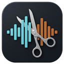

Ouvrez votre WAV
La forme d’onde s’affiche et l’écoute est disponible avant même l’analyse.
Un enregistrement d’une heure entre, des fichiers nommés sortent — sans les applaudissements ni les annonces. L’analyse propose, vous tranchez, et rien ne quitte votre ordinateur.
Le déroulé
L’analyse fait une proposition. Chaque frontière reste déplaçable, et aucun fichier n’est écrit tant que vous n’avez pas lancé l’export.
La forme d’onde s’affiche et l’écoute est disponible avant même l’analyse.
Les morceaux ressortent en cyan, les zones à retirer en orange. C’est une proposition, pas un verdict.
Écoutez chaque transition, déplacez une frontière, coupez, fusionnez, renommez. Le WAV d’origine n’est jamais modifié.
Morceaux séparés, concert en un seul fichier, feuille CUE ou vidéo MP4 : aucune sortie n’est cochée d’avance.
Contrôle total
Une captation de salle, deux morceaux enchaînés sans respiration, quelqu’un qui parle pendant le solo : l’automatique atteint vite ses limites. Tout le reste de l’application sert à reprendre la main, frontière par frontière.
Votre travail est enregistré au fil de l’eau. À la séance suivante, vous reprenez avec vos frontières, vos titres et vos réglages.
Posez, déplacez ou supprimez une frontière : le WAV d’origine n’est jamais modifié. Ctrl Z annule, Ctrl Y rétablit.
Si vous renoncez à exporter un morceau, les autres gardent leur numéro d’origine. L’ordre du concert reste lisible dans le dossier.
Placez la tête de lecture dans la forme d’onde et bouclez le passage sous le curseur avec B, jusqu’à poser la frontière au bon endroit.
Ajoutez une image de fond et obtenez un MP4 par morceau, ou le concert entier, avec les titres. De quoi publier ou simplement envoyer aux musiciens.
Le concert exporté en un seul fichier s’accompagne d’une feuille CUE et d’un fichier de repères : chaque morceau reste retrouvable dans un lecteur ou un éditeur.
Avant de télécharger
.exe autonome : ni Python, ni dépendance système, aucun assistant d’installation. Pour le retirer, mettez le fichier à la corbeille ; le guide indique où supprimer les reprises automatiques si vous voulez tout effacer.
Téléchargez l’application, ouvrez votre WAV, et gardez le dernier mot sur chaque coupe.
Télécharger pour Windows __DOWNLOAD_SIZE__